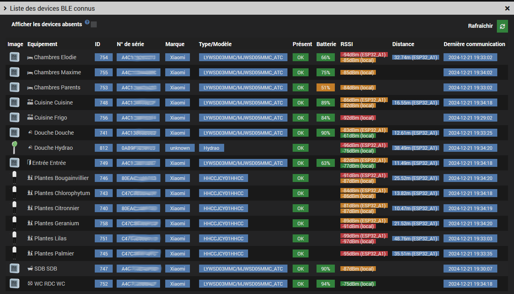

This plugin discovers and manages Bluetooth devices and OMG ESP32 BLE antennas. Theengs antennas are also recognized, but their parameters are not (yet?) available due to lack of Home Assistant auto-discovery support. The plugin does not replace the #plugin-theengs to deploy and manage Theengs antennas.
The plugin expects the broker to publish one or several roottopics that each group one or several antennas. The auto-discovery topic is optional, if it's not provided only presence will be available on the equipments.
The expected structure is the following:
/root_topic1/antenne1
/root_topic1/antenne2
/root_topic2/antenne3
...
/topic_de_découverte
Here's an example of a single roottopic theengs with 2 antennas tgw_localand tgw_remote.
LWT and BTtoMQTT must appear under each antenna:

Using this mode the plugin uses the MQTT2 configuration (if installed)
The MQTT2 plugin startup is automatic.

Using this mode the MQTT broker is not managed by the plugin.
It's mandatory to setup the MQTT connexion settings.
mqtt://localhost:1883
homeassistant55036, do not change until you have a conflict
Auto-discovery is active on startup, and detected antennas are added automatically. You can also stop or restart it using the Auto-discovery button.
If auto-creation is checked in the configuration page, devices will be automatically added at the end of synchronization.

Displays all unmanaged devices. The Discoverable column indicates whether the devices support auto-discovery. The display absent devices option allows to see auto-detected devices that are not reachable. You can also filter table rows by clicking on column headers.
The Add button allows adding discovered devices one by one. If the device supports auto-discovery, its commands will be automatically created; otherwise only presence and RSSI will be available.

Contextual display can be shown by signal attenuation or by distance (if supported by the antenna).
It is activated by selecting a node. The animation can be paused and the graph can be zoomed.

Displays already added devices. Missing devices can also be displayed, and you can filter table rows by clicking on column headers.

Contextual display can be shown by attenuation or distance (if supported by the antenna). It is activated by selecting a node. The animation can be paused. Missing devices can also be filtered.

Available commands depend on the type of device or antenna.
A custom image can be added by device category.
Theengs antennas only support presence detection. ESP32 antennas provide several commands (see Bluetooth and System tabs).
The Web Console button provides access to the ESP32 admin interface.
For more info, see the ESP32 commands reference


The Custom tab allows adding custom commands found in advertising data but not in auto-discovery (depending on the device). Example: temperature in Fahrenheit (tempf) for a reprogrammed Xiaomi lywsd03mmc.

Similarly for missing ESP32 commands like enabling/disabling external decoding or message count:

For actions, the payload field must be in the format "key1":value1 , "key2":value2...
Both advertising and auto-discovered data are available in the Other Data column of the Unknown Devices List page.

BT: Force scan or reboot the ESP32 or Theengs antenna)SYS: Auto discovery parameterBT: Publish Advertisement data parameterBT: Publish HASS presence for this.See the Jeedom community forum